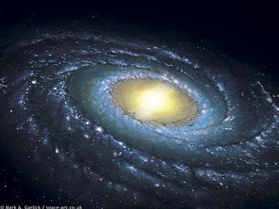

观音菩萨的形象
冯冯
去去来来. / .誊录
举例说，前年我一时顽皮，文中喜以“猴儿”自称，一则是童心未泯，二则是自嘲顽皮，后来冰莹姨母转来萧居士先后数函，指出不应用“猴儿”之自称，显得不庄重，而且心想猴将来就会变猴，萧居士之指教甚是，我已遵命悔改了，萧居士后来又来函责以仍见拙作自称“猴儿”“猴儿”，可见我仍未俊改，我那些是旧稿，一批寄上《内明》留用的，故此未得及更改，后来的稿就都不再自称猴儿了。
我在《内明》发表过数次个人的浅薄幼稚心灵经验，都是真实的。有人赐示认为可能是我自己的幻境，有人说可能是学习坐禅所引起的心魔，也有一位说我所称神游太虚到达银河系外面是不可能的，必是心魔，也有人说我所称见到观世音菩萨是英伟丈夫之说不符佛教传说，对于一切热心的先进及长者赐示惠询或批评，我都非常感谢，完全接受。我也常常自戒勿以禅坐有所见为喜，我亦非有意外炫这些最浅薄幼稚的心灵现象，只不过是提出来报告，请先进大德指导，和青年学佛朋友交换学佛经验，以兹改进罢了，假如我有错谬，还得请佛教先进大德多多指正，指引正途，我是很愿虚心接受的。
不过对于自称猴儿，我确实只是一时顽皮爱玩之失态，并非心想自己是猴，可以请萧居士放心，我并在此叩谢关注。
我有时仍是有童心的，仅在昨天我仍与邻家的狗儿谈天了大半天，我们谈话是旁人不懂的，只有小狗和我互相懂得，我们互用“汪汪汪汪”的吠声交谈。我又不是小孩子了，还跟小孩子似的和小狗在草地滚玩，互相吠叫，在草地上四脚爬行，玩得疯疯癫癫，这就是我的本性，忘了自己是三四十岁的人了，我又爱透了小动物，见到小猫小狗兔子小熊，什么都爱极了，这是再也改不了的。
我就是这样的人，见了羊，跟羊讲话，见了牛，也是要“牛语”会话一番，见了小鸟就学鸟叫。从前我们家附近有一家人养了一批巨型火鸡，像小驼鸟似的，百来只，天天张开尾屏晒太阳，我一走过，就忍不住要吹口哨，逗得百多只火鸡伸长了蓝色的子，摇摆着那一串蓝色的肉垂子。咯咯咯咯地叫个不休，吵得主人要出来骂我撵我，我就哈哈大笑逃走。没法子，小时候是这样顽皮， 现在见了火鸡也仍是爱吹口哨逗它们乱叫的。火鸡对于尖锐声音最敏感，一听见吹口哨，它们准要乱叫，十分好玩，您不仿试试看，假如您要试试，我这些小小心得十分乐意奉告：口哨务必要尖锐凌厉，务必要叫火鸡先生们出其不意大吓一跳，那包您一吹奏功，听到火鸡先生们咯咯狂叫，而且像接力赛跑似的，引起连锁式的一群乱叫，包管可以吵得邻居都出来咒骂，那您就可以装作若无其事，神态自若，轻轻松松，安全撤退，还可以回头倒着走，欣赏火鸡们的伸长颈子，向您瞪视，真是乐在其中。
另外一件我喜欢的顽皮游戏就是引起狗嗥，我记不得在中国的狗会不会像狼般地嗥叫，离开时太小了。在北美洲的狗类，多半是会像狼一般地嗥叫的，我最赏心乐事之一，无过于路过看见人家院子里有狼狗或者略有些狼形的那些狗类，觑着没人，我就学一声月夜狼嗥，学得也并非很像，不致叫您听了毛骨悚然，可是那些狗类一听到，就忍不住要昂首望天地嗥叫起来了，叫得十分难听凄惨，呜呜狂叫，它们挨家地一只只响应叫下去，吵得不亦乐乎，于是狗的主人就纷纷骂狗，叫它们“Shut up”，可怜的狗友，挨了一场冤枉责骂，也还不知道是怎么一回事呢！那我就笑，一路笑着，笑到眼泪都流出来。
渐渐地有邻人知道是我作怪了，一看见我走过，有些就要事先关照其狗，有次一位洋老太婆对她的狗说：“别望着那个坏蛋孩子！”
我又喜欢逗猫儿，差不多的猫儿都会跟我一见如故，我随便走到什么住宅区，看见人家的猫儿在草地上晒太阳，我就跟它喵喵会话一番，起先它还不耐烦地摆尾巴，后来就答应着，一边喵叫一边过来跟我亲热了，在我裤脚上擦着耳朵脑袋，竖起尾巴，然后就跟我玩，往往陪伴我散步走上半个街口。有一只邻近的大胖猫，尾巴像松鼠似的，更是时常送我回家，索性就在我家前院躺下来，直到我喂它吃完牛奶才跟我拜拜。
说我是老天真也可以，是长不大也可以，不成熟也都未尝不可，事实上我不光是有些孩子气，我也不光是喜欢恶作剧，在我的眼中，猫狗都是人类，只不过它们已经迷失了前生本性。他们投生畜类，什么本来的智慧都失去了，只剩下本能与天真，有一些畜类是知道或者能够回忆他们的前生，只是有口难言，偶然也碰到有些猫狗能够和我互相凝视之时，从它们的瞳孔中告诉我他们的前生故事，当然他们大多数都是迷失不知的，我说的是极其少数，这里无意详论，将来另外再谈我听到几只猫狗对我讲的它们的前生故事──它们并不是用语言对我讲，只是在我们彼此眼睛凝视之时，获得交换意见，我很难解释这种情况，不过我相信有很多人会了解我讲的是什么意思，学佛已有高深成就的人当然更加了解，就是一般人对于这种情形略有所知的人亦会意会。
在西方的许多大学里，设有传心学Parapsychology一科，研究类似此种之“传心”或“意会”，这是属于心理精神学系之下的一科，尤其是在英美德法加苏这几国，这一门学问是被视为严肃的研究的，不像我们中国人一般那么未经深入研究就随便视之为荒诞怪异。
西方学者称这种传心能力之一为ESP，假如您认为我说得太不够具体，我不妨举出两个例子，来证明西方科学界对ESP之重视。
最出名的例子就是美国太空署(NASA)自从一九七五年起，拨出专款聘请专家，进行研究传心通讯学。
美国和苏联双方科学家都希望找到更快于无线电波与光速的可靠太空通讯媒介，苏联在数年前就实验训练他们的太空人运用ESP在太空实验站上向地面联络，他们试用ESP能力向地面发出信号，亦从地面向太空实验站上的太空人发出ESP密码。苏联科学家的秘密档案中登陆者已经有多次初步的成功，最好的一次，是在相隔地面三千英里与太空人用ESP联络成功。
这又得谈到太空科学了，现在当代人类的最新科学通讯，除了无线电电波之外，还有微波(Micro—Wave)与雷射线(Laser) ，无线电波当然已经是最普遍，亦最容易控制，但是用后面两种作为太空之间的通讯，则尚未到那么圆熟随心所欲之地步，而无线电波的速度，在太空中的巨大距离之内，仍嫌太慢，假如要与距太阳系最近的一个星云仙陀座银河系联络，无线电波需要地球时间四百年方可穿过那一段四百光年的距离。 (每一“光年”就是光的速度走地球一年时间的距离，光的速度每秒钟走十八万六千二百七十二英里，比孙行者的斛斗云还快，行者是一个斛斗十万八千里。)
美国太空署至今仍未获得这样的成就，在这一点，是比苏联落后的，不过研究下去，将来也必定有一定的成果，这是可以预卜的。
别问我怎么知道的，我只能告诉您，也是ESP吧！
好了，美苏的科学家都开始注重研究ESP，是什么呢？依我个人幼稚的经历与见解，那就是人脑松果腺所发射出的微波，它的频率可能比微波还要精微。本来人人都具有或多或少这种天赋的，都给世俗利欲与烦恼等等消耗殆尽了，使我们失去了这种本能，假如我们能够澄清心中一切烦恼一切欲望，到达某一种禅定境界，这一种本能就能够逐渐恢复，再加精心苦炼，就会达到某一种世俗惊称为“神通”的境界。
苏联训练选择的几个太空人运用脑波通讯，是采用什么方法呢？照我所见，他们是采用佛教的坐禅方式，苏联是个无神论国家，他们这样做法，出奇吧？他们的看法是佛教的坐禅方式是一种科学的集中脑力去除杂念的方法，而不视之为“神”或什么的，教他们的那个人曾到过中国学过佛教的坐禅，他们的功夫没有白费，终于成功了在相隔三千英里的太空上与地面用脑波通讯了，虽然只是一些电码符号，彼此能感应收发，准确率到达百分之七十，这成就也很惊人了。
这是事实，并非我杜撰。等着他们将来必有公开的时候，您再验证我的话罢！
事实上，我的ESP能力是不能收发由心的，忽有所见，来时挡不住，去亦留不住，而并非我已有任何程度，实在仍未算得是什么修为，或者只是佛有时赐给我短暂“开开眼”吧？这些日子我烦恼太多，心情不宁静，什么也没有看见，只是看见伊朗的沙皇变成了一个僵尸穿着军服行走。（附记：此文发表在伊朗政变之前，沙皇今已死亡。）
 那么，我的偶然能够神游千里之外的香港妙法寺，或者有时神游太空，实在也是很平常很幼稚的一种脑波活动罢了，何必大惊小怪？又何必认为是怪异荒诞呢？我数年来数次偶然“看见”中国大陆的核子爆炸，预报也侥中，也不过是很肤浅的ESP而已，很多学佛的人具有更大的能力，只是他们不说出来罢，真人不露相！也只有我这样的冒牌货才会胡说乱吹一番，不过我的目的并非自炫，亦无足以自炫的价值，而是希望抛砖引玉及引起青年朋友对于佛法的门外初步兴趣而已。
那么，我的偶然能够神游千里之外的香港妙法寺，或者有时神游太空，实在也是很平常很幼稚的一种脑波活动罢了，何必大惊小怪？又何必认为是怪异荒诞呢？我数年来数次偶然“看见”中国大陆的核子爆炸，预报也侥中，也不过是很肤浅的ESP而已，很多学佛的人具有更大的能力，只是他们不说出来罢，真人不露相！也只有我这样的冒牌货才会胡说乱吹一番，不过我的目的并非自炫，亦无足以自炫的价值，而是希望抛砖引玉及引起青年朋友对于佛法的门外初步兴趣而已。
假如菩萨是个肉身凡人，天天时刻有那么多人求衪，衪就是坐火箭也应付不了哪！已经成佛的菩萨是用衪的“能”来救助世人脱出苦厄的，菩萨的“超能”，也就是佛教所称的“佛力”，并不受时间空间限制，随时可以射到。
闲话休提，且说我看见的观音菩萨，我自知并非幻想，亦非梦中，亦不是妄想出来的。我不时看见的观音菩萨，都是男子形象，并非世传的女像，在我的感觉，菩萨的现身，亦并非世传的什么“驾云”而来的，我见到的也不是菩萨的法身，而是菩萨放射出来的一种“能”，衪的辐射能力与我的脑波相接，产生形象，俗语所谓心动神知，心中念及菩萨，所谓诚心，即是集中了脑力，运用脑波祈求菩萨，菩萨的超自然的“能力”就辐射而至了，并非菩萨竟要亲身到达。
由于佛力引起“非物质”及“物质”的内部关系改变，而使到“事”与“物”有所变化，就使得称求其号者得以脱出苦厄，这是一般未研究的人认为不可思议的。
这又要不得不稍微一提我粗浅的科学见解──实际上是我从神游偷来的古代佛典上的一知半解，那就是我在《内明》发表过的“非物质”，佛力是属于非物质的一种“能”，非物质或称反物质，存在于宇宙之间，宇宙之大无穷无尽，是由“物质”与“非物质”互相交错存在的。
在物质的宇宙中有“非物”，在非物中有“物”。我们是属于物，视非物为虚，但是非物之中，视我们亦是虚。这已知的正反宇宙，大到无穷无尽，在物的宇宙之中，有至少一千五百亿个“银河系”模式的星云旋转，也就是我所见到的佛教“卍”字的由来，是象征宇宙的。
推动宇宙的动力，最大的是“非物质”或“反物质”的“能”，它能够进入物质的最小的中子粒子之内，使其改变，而产生很大的变化与物质能量。非物质的“能”，能够自由来往太空，并无时空──太空宇宙其实是并无时空的，时空只不过是地球旋转所引起的错觉，一万年前跟十万年前其实从太空看来只不过是同一点。只因为我们是有生有死，感觉到时间。
在每一个银河系模式的旋转卍字星云之中，有最少一千亿个太阳系，而我们的银河星云不过是很微小的一个而已，我们太阳系又是很小的一个，地球更不必谈了。
佛者，是已经脱出有限的生命，而保留衪的一切识力智慧，存在于一种“非物质”的形式，化为宇宙中非物的一部分，是不再有“生”有“死”的，是永恒而不受时空限制的，怎样能炼到，则非我所知，无法讨论，我只知道这么一点点，就是佛力是宇宙一体的一种“非物”之超能，的确谁说佛是女像男像，都不过只是佛的能引起我们心中产生的一种“有限”智识的形象，要视各人的识力，见闻，观念等等不同，故此，观音菩萨有千种化身，有人见到是女身的菩萨，有人见到的是男子，亦有人见到是老婆婆，亦有人是受了寺院塑像形象之印象影响。
是的，观音菩萨是以其无限的“非物”超能拯人出于危困痛苦，而非如世俗误传以为是物质的人身而来的。
菩萨两字，梵文原称“菩提萨埵”，旧译有谓“大道心众生”，又有译“觉有情”。
维摩经注有谓：“菩提是佛道之名，萨埵为大心众生，有大心方能入佛道，故名菩提萨埵。”
大论释说：“菩提名佛道，萨埵名成就众生，以佛道成就众生，故名菩提萨埵，菩提是自行，萨埵是化他，故称菩萨。”
普门品：“尔时无尽意菩萨……合掌向佛，而作是言：世尊，观世音菩萨，以何因缘名观世音？佛告无尽意菩萨：善男子，若有无量百千万亿众生，受诸苦恼，闻是观世音菩萨，一心称名，观世音菩萨即观其音声，皆得解脱。”又说：“若有众生，多于淫欲，常念恭敬观世音菩萨，使得离欲；若多瞋恚，常念观世音菩萨，使得离瞋……。”
凡遇诸难，要诚念观世音菩萨佛名，皆得解脱。
以上所引经文，容或我记忆有误，请原谅，不过相信大意仍存，我所知极有限幼稚，只能够用前数段的解释来说明观世音菩萨度厄济困的方式是佛力的“非物”超能现象，无法进一步作较深入的解释。总之，我认为假如斤斤计较菩萨是男是女，甚至要考证衪穿什么衣装，在我看来，是没有必要的。请问“光”与“能”是男呢还是女呢？穿印度装呢？穿中国宫装呢？穿“太空装”？
我认为，只要我们至诚祷念观音菩萨，我们所行正善，我们的脑波就能接触到菩萨辐射迎来的“能”，衪的佛力会使我们的环境事物在无形中改变，使我们得脱苦厄。这是与人为的力量是完全不相同的，各人见到的菩萨形象，也因人因识而异，是以有千种菩萨化身，要知是否魔见，那容易，若有魔邪冒充菩萨，它当然有邪求，我们自然立刻知道，也只须正心念菩萨名号及金刚经，邪魔就退，真佛出现，而且所谓魔邪，很多都不过是我们自己心中的邪思作怪招致的罢了。
观音菩萨的能力现相，现身说法济度，通常现出与对象相同之相，亦即是就对象之识力与观念而现相，故此有天王身（梵天身、帝释身、大自在天身、毗沙门身）。五人身（小王身、长者身、居士身、宰官身、婆罗门身）。四女身（长者妇女身、官妇身、居士妇女身、婆罗门妇女身）。两童身（童男身、童女身）。三圣身（佛身、缘觉身、声闻身）……又有八部身。（天身、龙身、夜叉身……我记不起八部名称了。）
总之，有无限之形相变化化现，有千手千眼，有无穷色，无穷相，我们若要固认一相或固执一词，就变成了执着，我认为最要紧的是心中至诚善念，与祷念“观世音菩萨”，这是最重要的，不要太希求现相；求之过急反而产生幻相着魔。我们所求的是菩萨的“能”，佛力一到，就产生事物的改变而使我们脱苦厄了。
我这些，是以我这样未入门的初学幼稚观点来向初学的青年朋友胡说的，假如有谁要研习佛理，还须向佛界的各位高僧及大德居士请教，别信我这一套疯疯癫癫的话。
普门品又说：“若有持是观世音菩萨名者，设入大火，火不能烧，由是菩萨威神力故。若为大水所漂，称其名号，即得浅处。若有百千万亿众生……入于大海，假使黑风吹其船舫，漂堕罗刹鬼国，其中若有乃至一人，称观世音菩萨名者，是诸人等，皆得解脱罗刹之难。以是因缘，名观世音。”
此外，还有刀难，鬼难、囚难、贼难等等任何千灾百难，均可持念观世音菩萨之名而得解脱，我手无经卷，只凭记忆，文字或有错谬，但大意似系此。
“佛告无尽意菩萨，若有众生……”还有许多，我记不住，青年初学佛的朋友请阅读普门品经卷原文，当可获甚多智慧。
闻说观世音菩萨之名号，在唐代以前原称全名“观世音菩萨”，后来因唐人避太宗李世民之“世”字名讳而略称为“观音”，这种封建余毒什么避讳，实无道理。
又闻玄奘三藏谓不应译为观世音，应译为“观自在”，梵文Avalokite'Svara，是否此意，我不识梵文，不敢妄言。
世传观世音菩萨是妙庄王(Subbavyuha)之女，被父王下令杀死后，灵魂进入地狱，地狱随即化为天堂，她乘坐莲花浮至普陀洛伽山(Potaraka)，或者这是世间多将观世音塑为女像之起源。
从现代心理分析来说，人类最渴望的是母爱，与佛洛伊德医生齐名的心理学家容氏(Jung) 在他所著的“形象与象征”一书中说：人类心理中有一部分是婴儿的寻求母爱的渴望，无论长到多大多老，总记着在母亲怀中做婴儿的安全与温暖，所以在许多宗教都将象征母爱的一个女性像尊奉为神，这是对于一去不复返的婴儿时代的追寻，所以在基督教有圣母玛利亚，在佛教有观音老母，在古代巴比伦与埃及亦均有母爱象征手抱婴儿的女神。
容氏原文是德文，大意如此，我手头无书，只凭记忆，我甚然其说，尤其是在重视孝道的佛教，很自然地就将观音菩萨塑造为一位慈爱的母亲。观世音菩萨的白衣原是天竺装束，其形象是抱着一个婴儿，有些比较宗教学者考证是观世音的慈悲佛母相，西传到了中东，衍化为其他宗教的圣母，此说当然仍待更多考证，不过就其形象之相似，也不无可能，他教之使用念珠，亦与佛教相似，这是很有研究的价值的。
虚云大师曾讲过某宗教是出于密宗，他语焉不详，我想必有所本，依我所知，西藏奉拜观世音甚笃，称首府拉萨的喇嘛法王宫为“普陀洛伽”，而西藏又是密宗的发祥地，西传至中东，可能性甚大，改天我再讨论这些。
观世音菩萨，在鸠摩罗什译经以前之古本佛经，都称观世音菩萨为阿弥陀佛的左右两位大士之一，另一位是势至(Mahasthamaprapta)，观世音司慈悲门，大势至司智慧门。观世音后来成为独立的菩萨，似系经由龟兹国高僧姚秦鸠摩罗什译出《妙法莲华经》以后的事，妙法莲华经一共二十八卷，第二十五卷是“观世音菩萨普门品”。
这些来源均说观音菩萨是男相，在古代亦盛行塑奉的男像，复以慈悲故，化身女相，现世准提观音，象征佛母。
在我个人的神游之中，所见观音菩萨悉为男像。不过，要到我多方考证，方知记载上有关原是男像之情形，最初我是并不知道的。在幼时我一直称呼观世音菩萨为“观音老母 ”，可是我稍长大以后，所见都是男像，这曾经令我迷惑许久。如今可都恍然大悟了。最要紧的是笃诚祷念观世音菩萨，自然可获得衪的超自然能力的辐射，化解一切灾厄，我们又何须争论衪是男像或女像呢？那都是衪因人而施的千百化身形象之一罢了。
永忏楼随笔之三十──《观音菩萨的形象》
原载香港《内明》第86期：1979年05月1日
原载香港《内明》第87期：1979年06月1日
书名：夜半钟声
作者：冯冯
出版：天华出版事业股份有限公司